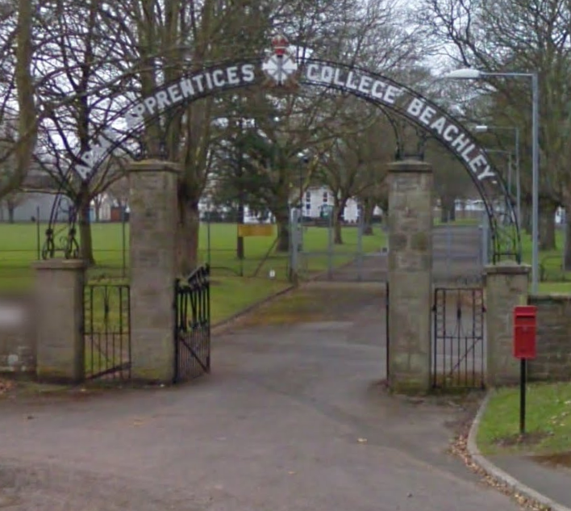
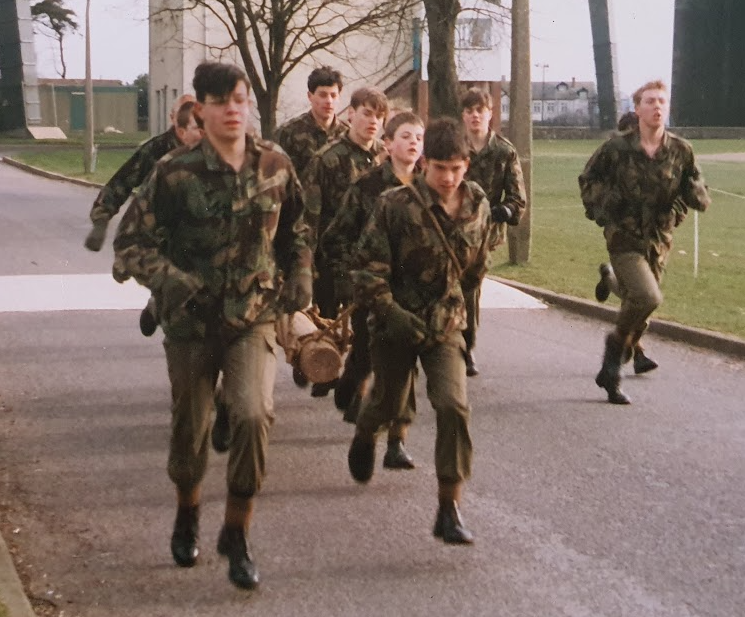
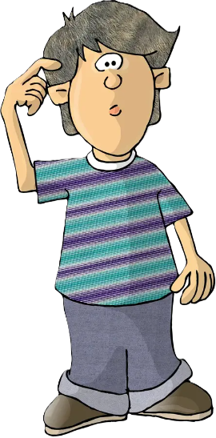
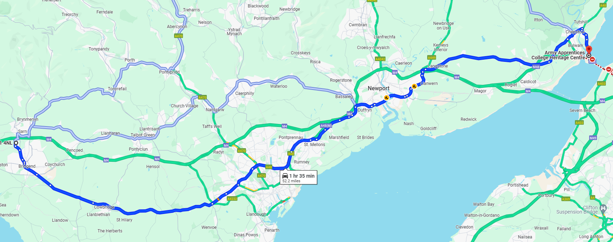
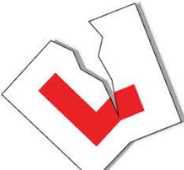
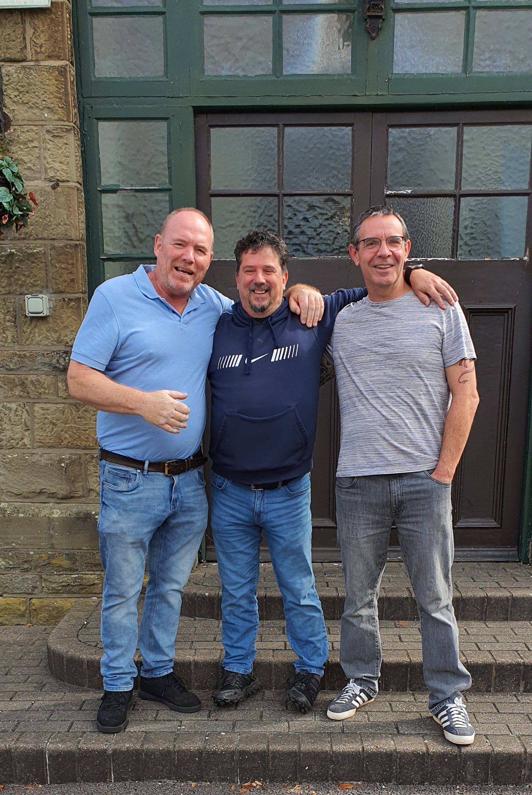
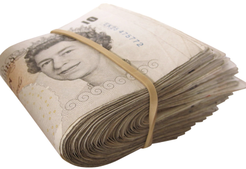
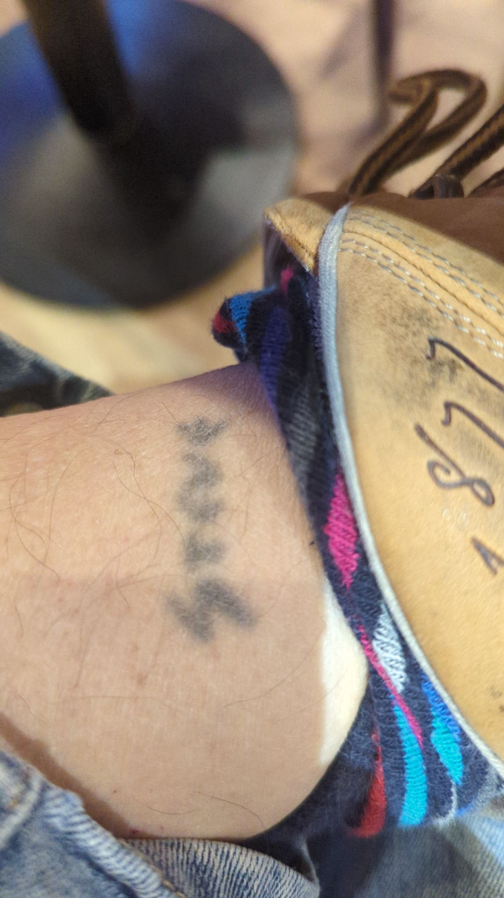

Suzuki TS100
My first bike!
The good looking one in the middle is a 16 year old me, the other two are my sister Susan on the left and her friend Kim on the right.
On 15th September 1981 aged 16 years and almost 2 months I joined the Army as a Boy Soldier and started my training as an Apprentice Electrician, and would be barracked at the Army Apprentices College, Chepstow(AAC) for two and a bit years.

We didn’t use these gates but they have become synonymous with reunions etc.
The first 6 months were taken up with basic military training. We were taught how to take care of our hygiene, we were made to shave every day even though hardly a hair would be appearing on most of our faces for a while yet, washing, cleaning our teeth, showering, laundry, etc.
There was also the hygiene and care of our accommodation block. Waxing and buffing the linoleum floors with a device called a bumper, cleaning the communal toilets and bathrooms. We learnt to fold and stack our clothes and bedding to within such tight tolerances I never quite managed it so inevitably the contents of my locker and my bed pack would get thrown out of the window by the NCO doing the morning inspection.
Of course we marched and learnt drill moves on the drill square, if fact if we weren’t marching in formation we were running in formation; everywhere. Some of the guys joined the college band so we would march to their beat.
Nowadays they call it bullying, but I don’t think we saw it as that, granted we got shouted at a lot and made to do some seemingly stupid things but later we could see that actually it’s all about discipline, it’s all designed to make you do what you were told when you were told, without questioning it, no matter how stupid it seems at the time. One day it might save your life.
We went on various camps where we would sleep under canvas, I say sleep, but that is used loosely, just as you started dropping off you would get prodded to go and do your turn on guard duty or suddenly there would be a need to go and patrol somewhere, we swam across rivers, canoed in them, washed in them, dug trenches, sometimes even dug trenches around our tents to stop the inevitable flow of water from the rain outside washing us into the river below, fired SLR rifles down the ranges by Caldicot, sometimes slept under the stars but ran everywhere!!
We had moral boosting competitions like the log run, weeks and weeks of running round the camp with 6 or 8 of us carrying a log with one pulling on a rope at the front.

Notice the froppy haircuts on some of the boys, new romantic music was all the rage, what’s under your beret is yours was the mantra we followed.
The assault course under the Severn Bridge was another favourite to help us pass the time, I must admit, I did enjoy it although some of those walls were quite high for my 5′ 6″ tall body to scale sometimes.
After that initial 6 months training we went on to start our electrical apprenticeship training. That was mostly a blur and I don’t remember too much about it. I know we used to march, in formation, down the hill to the training sheds. The instructors always wore brown workshop jackets. I can remember drilling rawl plug sized holes using a hammer and drift, no power tools available to us back then, and learning mathematical computations to calculate thing like how many wires you can fit into a piece of conduit, the answer was inevitably the same as the number of wires you could physically fit into a piece of conduit.
We did of course still do some military training on and off camp on weekends and still ran everywhere but life became ever so slightly easier. I still got all my clothes thrown out of the window but not as often anymore. Plus we were now allowed off camp, so visits home on my weekends off, I used to get the train from Chepstow to Bridgend in those early days but that was going to change soon.
My first motorbike…
I can’t remember who paid for it or exactly when I got it but I think it was my parents who bought the bike for me, a white Suzuki TS100, in the hope that I would be able to come home on leave more often if I had the means to do so.
I know I was still only 16 at the time so couldn’t take it on the road for another couple of months so whenever I was at home I would ride it round and round the 1/3 acre garden at my parents new house in Pen-y-Fai.
I have always told people that they moved there without telling me, after I left for Chepstow, which of course wasn’t true, but made for a good story, although the house did only have 2 bedrooms, hmm?

The garden itself was completely overgrown with brambles when they moved in. So my father roped me and Frenchie(Mark Allen) in to help get rid of them. In my little 16 year old mind I remember me and Frenchie slashing away at those brambles until the garden was an oasis of flowers. But in reality it would have been my father that did all the work with me and Frenchie getting in the way for a day or maybe at a push two days until we got bored and distracted by something else.
So when my 17th birthday came and the L plates went on the bike and off I went on it to Chepstow, 52 miles distant. It seemed to take forever to get there on the A roads, through Cardiff and Newport. but I enjoyed every minute of it and was hooked on bikes from then on.

In the college and to stop us getting bored and homesick we were forced to take on two hobbies in the evenings, one of mine was swimming, which I was already fairly good at having lived 100m as the crow flies from the local pool in Llangeinor. The other was cycling initially, again I was pretty good at that too, having ridden my push bike everywhere as a kid. I soon replaced my pushbike with my Suzuki and my second hobby became motorcycling. The local school of motoring was employed by the college to train us up and get us ready for our tests. Mine was in Cwmbran; in January; in the snow…
I passed my bike test on 23.01.83 so already my imagined timeline is all wrong.
I can actually remember the test quite clearly, going to the test center, the car park out the front and the building itself, funny how things stick when others just fly away.
Anyway, it was in the days before the examiner followed you around in a car and give instructions through in helmet intercoms. He would instead stand on the side of the road and stop me to give me directions of where he wanted me to go and then stand on various corners watching, he pre-warned me of the emergency stop on the next circuit so all I had to do was keep an eye out for him on the side of the road and hit the brakes when he held out his clipboard.
Easy…
It was then back to the test centre for the results…bare in mind it was snowing for part of my test…
🏍️🎉 I PASSED 🎉🏍️
Straight away I took off my L plates and threw them in the bin, got on my bike and headed down the A4042 to the M4 junction at Newport. What a mistake getting on that motorway was. My 100cc Suzuki would barely do 50mph. Lorries were thundering past covering me with spray and sludge off the road….urgh! I gave the M4 a miss after that.

There was a small group of us in the camp that had bikes, we would ride around aimlessly as teenagers do and then go to the New Inn after and have a coke(don’t forget I was still only 17), a couple of games of pool and listening to some punk rock/new wave/new romantic music on the jukebox before heading back to camp to get ready for the next day of hard graft.

40 years later – Danny Dawkins-Smith – Me – Ian Moorhouse
Photo taken outside the Admin block(strange but I don’t remember that building at all)
Back home on leave I used to go off road up the common with my father, he had a Suzuki TS185ER, we used to follow the local hunt(that was the excuse for being there) but I hated it, I am blessed with quite short legs(some might say “very short legs”) so if I got stuck straddling a bank or on the top of a wheel rut I would simply fall off as my legs wouldn’t be in contact with terra firma.
Oh yeah, and I fell off in a river.
We’d had a particularly rainy couple of days and I went out for a ride. I ended up in Castle Upon Alun, anyone that knows the area will know that there is a ford where the river crosses the road. Normally it’s OK but it had been raining for a while and the river was flowing well but I figured I could make it. Nope. I ended up sat in the middle of the stream with my bike next to me. The force of the water took my bike from under me and that was that. I walked up to the nearest house and phoned for my father to come and get me in the Datsun pickup.
When I got the bike home I took the exhaust off, emptied the water out, bolted it back on an she fired straight up first kick.
As soon as I could afford it bike number two was purchased…

Some of my memories of Chepstow
Lifelong friends; there was a little gang of us, Mo(Ian Moorhouse), Eddie(Eddie (EDJ) Canning, Frank O’Meara, Ginge Brown, Vardy(Ian Vardy), Smiffy and a few more who’s names will come back to me I’m sure. Some of us had our names tattooed onto our ankles, probably got it there so our mothers wouldn’t see it lol. Mine was done in the style of the Sex Pistols.

Pay parades: During the first 6 months on camp we weren’t allowed access to our pay but we were given £15 a week from it by the paymaster for “essentials”, this was fags for most, sweets for me. By the way, a pack of 20 JPS or whatever was less than £1 in 1981.
Haircuts: I can’t remember who did them but I think it was one of the staff members earning a couple of extra beer tokens. My mother used to cut mine when I was on leave. One day I got taken to one side by the RSM who asked what the f&%# has happened to my hair, he took me to somewhere quiet and “straightened” it for me. I was cautious of Mams haircuts after that.
Leave: No leave or contact with family during those 6 months. I think this was to help those that suffered from homesickness cope. Strangely I had no feelings of homesickness at all.
Exercise: I loved it, I was already fairly fit(compared to others) due to my outdoor lifestyle prior to joining up. We would go out for a run through the lanes around Beachley and Tutshill all formed up in ranks of three, if the guy in front of you slowed down it was common practice to give him a push until he’d recovered enough to carry on.
Swimming: As I said earlier, one of my hobbies was swimming, we would go to the pool on camp(now covered over and used as a squadron bar I believe) and swim for an hour or two under the supervision of one of the trade instructors, length after length after length
Triangle Games: These were a swimming competition arranged between the various junior forces of the Army, Navy and Airforce. We would travel to other camps and compete before travelling back the same day. I got a couple of firsts for backstroke and some seconds in the individual medley.